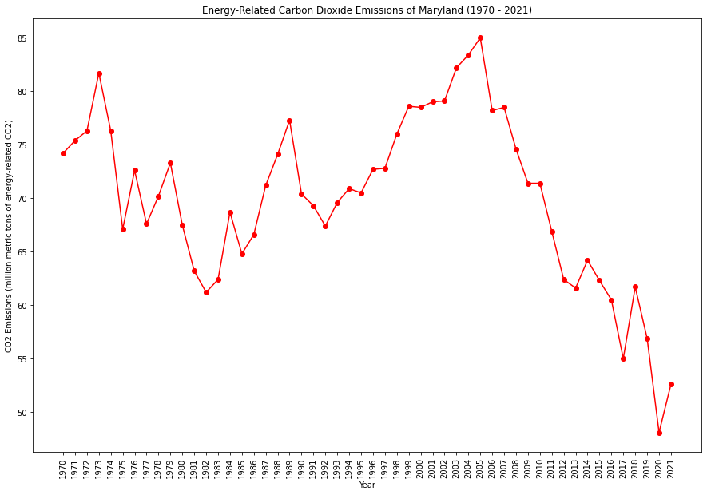
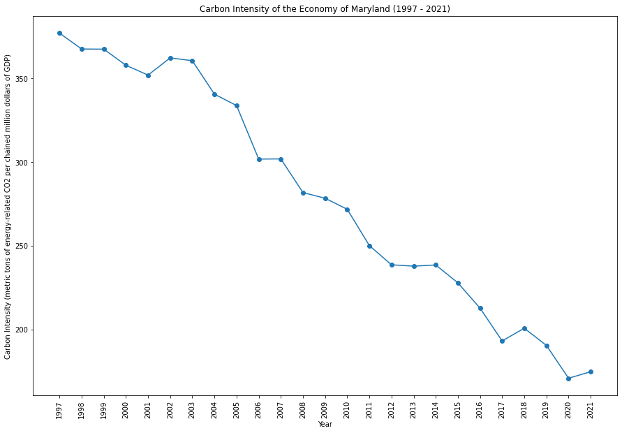

|  | |
|  | |
Maryland has been proactive in addressing environmental issues, with a focus on clean energy and emission reduction. The state has set goals for offshore wind energy and has initiatives to increase energy efficiency. Coastal areas are a priority for resilience efforts due to the impacts of sea-level rise.